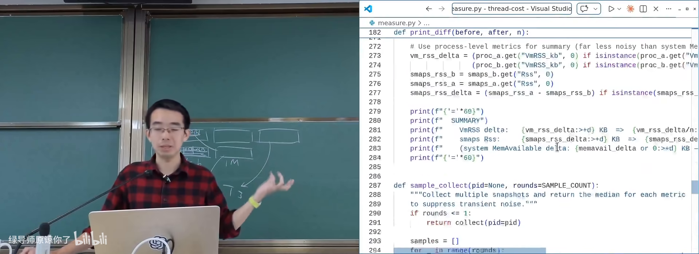
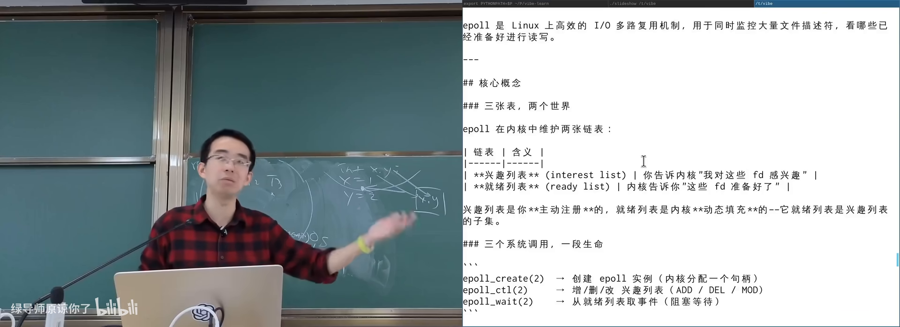
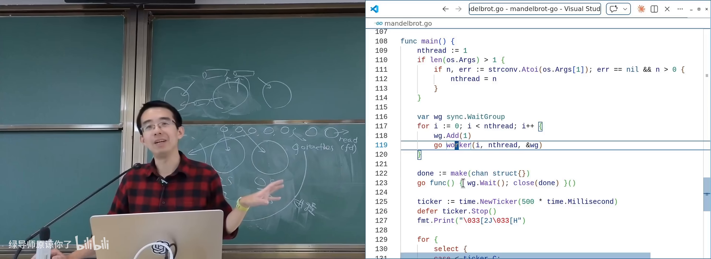
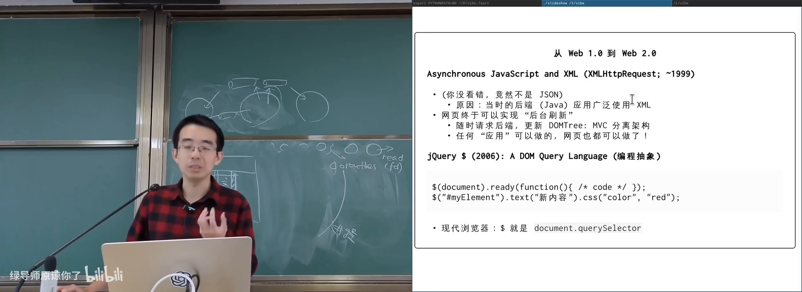

原视频：Bilibili · BV1dVRdBpEze（时长约 83 分钟） 课程：南京大学《操作系统原理》（2026）第 19 讲 整理说明：本书由视频字幕经 AI 重构而成；口语已转为书面语；关键时间点标注 (参考时间)，截图卡片可跳转视频对应位置。
1. 动机：线程不是免费的，计算图才是目标
(参考时间: 00:00)
前几课建立的并发工具，本讲用来解释真实系统：数据中心服务、浏览器前端里的并发编程是怎么做出来的。
1.1 malloc 优化的启示：看真实 workload
作业里若只关心正确性，大锁往往能过 easy case，却过不了 hard case。性能调优必须先问：到底需要什么样的性能。
算法课习惯盯 worst case；真实系统关心的是现实分布下的表现，同时别把 worst case 做烂（否则攻击者可构造哈希冲突，把 Apache 之类打慢——复杂度攻击）。
对 malloc/free 的观察：
- 大对象（数 MB～上百 MB）：多半对应 hash 表扩容、大缓冲/文件映射，之后会反复读写；分配后只碰几个字节往往是 design bug。
- 小对象：创建/回收最频繁，生命周期短（临时字符串等）。
- 中等对象：往往比小对象活得更久。
推论：过实验几乎只要管好小对象分配回收的可扩展性。思路与 sloppy counter 同构——每线程（或每 CPU）持有自己的 slab（按大小切好的内存板）与空闲链表：
- 小对象：按 16B/32B/… 桶化，分配/释放多为 O(1) 本地链表操作；
- 慢路径：本地耗尽时再向系统要一大块；
- 推荐阅读 malloc survey（可在 AI 辅助下读）；1964 年已有 segregated free list 等思想。
premature optimization is the root of all evil——优化前先绑定真实 workload。
1.2 线程的真实开销
每个线程都有你看不见的代价：
| 开销来源 | 说明 |
|---|---|
| 栈内存 | Linux 默认栈可达 8MB，但按需分页，实际只用栈顶 |
| 内核数据结构 | /proc/<pid>、线程控制块、PID 等 |
| 上下文切换 | 中断/系统调用进内核，保存/恢复寄存器 |
课堂演示思路：进程前后读系统资源状态，创建 N 个空线程，差值除以 N。实验测得每个最小线程大约带来 ~16.9KB 量级的系统资源增长（视环境而定）。

测量一个 Linux 线程占多少系统资源在 B 站打开 (00:17:30)
1.3 两条演化路线
我们真正想要的是：计算图想怎么写就怎么写，节点调度几乎无额外开销。当 spawn/join 远贵于函数调用时，业界有两条路：
- 轻量线程：保持多线程编程模型，把 spawn/yield/join 做得接近函数调用——协程、Goroutine。
- 改执行模型：在语言里直接描述计算图——Promise / future / async-await。
2. 协程：用户态的「线程」
(参考时间: 00:20:11)
协程（coroutine，用户态可控切换的执行流）可以在不创建 OS 线程的前提下，同时维护多条程序执行流。
2.1 Python generator：同一进程内的百万「线程」
def t_worker(name):
i = 0
while True:
yield (name, i)
i += 1
threads = [t_worker(f"t{i}") for i in range(1_000_000)]
while True:
t = random.choice(threads)
print(next(t))
- 创建一百万条执行流后才开始运行；
- 每次
yield把当前函数状态暂存并返回调用者； - 再次
next从上次状态继续； - 进程内始终只有一个 OS 线程，切换是程序主动的。
Simple C 视角：多线程像多份栈；generator 则是应用层维护的多份栈/状态，yield 在栈之间切换。C/C++ 曾用 setjmp/longjmp + 手工改栈顶指针实现类似机制（现在更多是语言级协程关键字）。
「能做闭包的语言」理论上都能实现这种状态保存：捕获作用域变量 + 记下 PC，执行流即可封存。
2.2 用户态协程的两个麻烦
- 阻塞 I/O 会卡住所有协程：
read进内核后若无数据，本 OS 线程睡眠，其他协程也跑不了。 - 不能用互斥锁做协程间同步：单 OS 线程下，
lock后yield，下一个协程再lock会进内核等待 → AA 型死锁。
解决方案依赖 UNIX 演化出的机制：
- 非阻塞 I/O（O_NONBLOCK）：
read无数据立刻返回EAGAIN，执行流可yield后再试； - I/O 多路复用（如 epoll）：一次监听大量 文件描述符（进程内对象，不受「每线程一把锁」限制），谁就绪就调度谁；
eventfd/timerfd等也可作为协程同步原语。

epoll：同时等待大量文件描述符就绪在 B 站打开 (00:42:30)
若编译器/运行时把 sleep、阻塞 read 自动改写成「标记不可运行 + 非阻塞重试 + yield」，程序员仍写同步风格代码——这便是 Goroutine。
3. Goroutine：轻量线程 + Channel
(参考时间: 00:44:00)
3.1 M:N 调度直觉
Goroutine 的实现草图：
- 进程内创建若干真正的 OS worker 线程；
- 每个线程循环从全局可运行队列取 Goroutine 执行；
- 编译器/标准库把阻塞调用改写为异步；
epoll等监听 I/O，就绪后把对应 Goroutine 放回队列。
效果：
- 用起来像线程（
go f()轻量 spawn）； - 共享同一进程地址空间，可真并行；
- 同步与 I/O 在用户态调度器 + 内核就绪通知之间完成；
- 在应用进程里几乎「长出一个小操作系统」。
前提：使用标准库/受控运行时。自己写汇编级阻塞调用，仍会占住 worker。
3.2 继承 UNIX 哲学：用通信共享内存
Effective Go 的著名主张：
Do not communicate by sharing memory; instead, share memory by communicating.
互斥锁/信号量解决同步，数据交换却仍走共享缓冲——同步与通信割裂。UNIX 的管道本身就是计算图：
cat a.txt; cat b.cpp | wc
节点产出一行数据，下游才能继续；自带生产者–消费者同步。
Go 把管道抽象为 channel（在 Goroutine 间传递消息并同步的通道）：
- 可读可写、可多路；
- 同步与数据传递合二为一；
- 灵感来源与 UNIX 设计者（Ken Thompson、Rob Pike 等）一脉相承。
3.3 课上演示：Go 版 Mandelbrot
for i := 0; i < n; i++ {
go worker(low[i], high[i], results)
}
go monitor(results, ticks)
- 图像切竖条，每条一个 Goroutine；
- 结果与进度经 channel 回传；
- 创建计算节点几乎不心疼开销。
AI 生成代码也可能在同步上出错——又一个「必须自己看懂计算图」的例子。

Go Goroutine 并行渲染 Mandelbrot在 B 站打开 (00:52:30)
4. 前端世界、Promise 与异步编程
(参考时间: 00:54:18)
4.1 另一条世界线：JavaScript
1995 年，Brendan Eich 在 Netscape 约十天设计出嵌入网页的脚本语言，融合 C/Java/Scheme/Self。他本人偏爱函数式，于是 function is first-class citizen 进入 JS——这是日后异步生态的关键伏笔。
网页生态简史：
- 早期 HTTP 极简：发路径字符串，服务器回 HTML；
- 雅虎时代页面静态，切图 +
table布局； - 1999 年 XMLHttpRequest：JS 可随时发起请求 → AJAX（Asynchronous JavaScript and XML）；
- DOM + 查询选择器（jQuery /
document.querySelector）可改样式、改文本、增删节点； - 后端 XML（今多为 JSON）拉回后刷新界面，无需整页重载；
- Google 把 Office 搬上浏览器，Chrome OS 等；后来 Edge 借 Chromium 内核。
控制台粘贴一段脚本，即可把「土味页面」改成圆角、动画、现代控件——HTML/CSS/JS 的便利性压过 Qt 等传统 GUI。

从 table 切图到 DOM 动态刷新的网页进化在 B 站打开 (01:00:00)
4.2 JavaScript 的并发选择：单线程事件循环
JS 面向零门槛脚本，不能要求人人懂 data race。它的选择：
- 事件驱动：加载、点击、请求返回都会生成事件；
- 单线程 + run to completion：一个事件处理函数必须跑完，中间不被切换，禁止与别的事件并行；
- 没有阻塞 I/O：不存在同步
read；发起请求立刻返回，完成后再入事件队列。
因此：事件处理在逻辑上是原子的，用户代码几乎不会踩 data race / TOCTOU；代价是——你在事件里写死循环，整页卡死。
4.3 回调地狱
有依赖的任务序列（登录 → 拉好友列表 → 拉动态）在纯 callback 模型下，计算图被迫拆成多层函数嵌套：
login(user, function (ok) {
if (ok) {
fetchFriends(function (friends) {
fetchFeed(friends, function (feed) {
// 又嵌套一层……
});
});
}
});
顺序逻辑被拆碎，缩进爆炸，调试极难——callback hell。
4.4 Promise 与 async/await
Promise（表示「未来会完成的值/任务」的对象）把计算图写进代码：
const p = fetch(url); // 立即返回，状态 pending
// 随后 fulfilled / rejected
p.then(onSuccess).catch(onFail);
Promise.all([a, b]).then(c); // 类似 join
fetch立即返回 Promise；请求已在后台工作；then/catch描绘先后与失败分支；Promise.all等价于「多个前置完成后再继续」。
即便如此，人类仍想要顺序、选择、循环的写法。于是：
async function：运行时包装为返回 Promise 的函数；await expr：等待 Promise/值；编译器/引擎把后续代码编译成链式then。
async function work() {
const a = await f();
const b = await g();
const r = await Promise.all([fetchData(), p]);
return a + b;
}
你在源码里保留顺序计算图；引擎生成难看的回调链，但调试与可读性归你所有。await 非 Promise 的值时直接得到该值（如 await 1 → 1）。
课程网站示例：网页里 await 调用 online judge 后端校验 token，即异步 API 描述计算图的日常用法。
4.5 生态回看
JS 从「十天设计、语义坑多」的语言，凭借一等公民函数，长出 Angular/React/Next、Electron（VS Code）、Ink（终端 UI）、乃至浏览器内执行汇编/C（Wasm）与 TensorFlow.js / Three.js。
学前端异步时，不妨重走并发史：线程 → data race → 互斥 → 同步原语 → 在语言里舒适地描述计算图。Go 与 JS 分别代表「轻量线程」与「语言级异步」两条路线。
5. 小结：同一问题的三种答案
flowchart TB
subgraph want [想要的]
G[自由描述计算图<br/>调度几乎无感]
end
subgraph path1 [路线一：轻量线程]
C[协程 / generator]
N[非阻塞 I/O + epoll]
end
subgraph path2 [路线二：运行时线程]
G2[Goroutine M:N]
CH[Channel 同步与通信]
end
subgraph path3 [路线三：语言异步]
JS[JS 单线程事件循环]
P[Promise / async-await]
end
G --> C --> N
G --> G2 --> CH
G --> JS --> P
| 机制 | 编程心智 | 并行性 | 典型场景 |
|---|---|---|---|
| OS 线程 | 多线程 + 锁 | 真并行 | 通用，但创建贵 |
| 协程 | 同步风格，主动 yield | 通常单线程（除非 M:N） | 高并发 I/O、用户态调度 |
| Goroutine | 像线程，channel 通信 | 进程内真并行 | Go 服务端 |
| Promise/async | 计算图 / 顺序异步代码 | 逻辑并发，单线程执行 | 浏览器与 Node |
附录：概念补给
协程（coroutine）
- 是什么：用户态执行流，可主动挂起/恢复，切换不依赖 OS。
- 课上为何出现：让 spawn/join 逼近函数调用，支撑百万级任务。
- 和什么像：同场话剧演员轮流上台，导演（程序）喊换人，不关剧场大门。
generator / yield
- 是什么：语言级「暂停函数并交还控制」的机制。
- 课上为何出现：用 Python 演示用户态多执行流。
- 和什么像：书签夹在书里，下次从书签继续读。
非阻塞 I/O（O_NONBLOCK）
- 是什么：I/O 未就绪立刻返回错误码（如 EAGAIN），不睡眠。
- 课上为何出现：协程遇到 read 才不会卡住整个进程。
- 和什么像：外卖柜空了就走人，过会儿再来看，而不是站在店门口死等。
epoll / I/O 多路复用
- 是什么：一次等待多个文件描述符就绪的内核机制。
- 课上为何出现：协程运行时的就绪通知底座。
- 和什么像：前台监控多个取餐屏，谁好谁先取。
eventfd / timerfd
- 是什么：用文件描述符表达事件与定时的内核对象。
- 课上为何出现：协程间同步不必用互斥锁，可走 FD 语义。
- 和什么像：用小旗子代替口令——谁举旗谁继续。
Goroutine
- 是什么：Go 的轻量执行单元，由 Go 运行时映射到少量 OS 线程。
- 课上为何出现：同步写法 + 高并行 + 共享内存的服务端模型。
- 和什么像：大量轻工人共享几条传送带，由调度员安排上带。
channel
- 是什么：Go 中传递消息并同步的管道抽象。
- 课上为何出现：「用通信共享内存」的 UNIX 管道在语言中的重生。
- 和什么像：部门间传阅签，签在谁手里谁签字，不共用一张纸乱写。
XMLHTTPRequest / AJAX
- 是什么：浏览器中发起异步 HTTP 请求的经典 API / 技术组合。
- 课上为何出现：网页从静态页变为可后台刷新的应用。
- 和什么像：前台办事时可以先取号，一边干别的，叫号再回来。
回调地狱（callback hell）
- 是什么：多级异步依赖被写成层层嵌套回调，难以维护。
- 课上为何出现：纯事件回调模型描述顺序计算图的痛点。
- 和什么像：办事要一层层求人签字，字签不完，字迹也认不出。
Promise
- 是什么：代表未来结果的对象，可 then/catch 组合任务图。
- 课上为何出现：把计算图写进代码，替代深层回调。
- 和什么像：取餐号——现在拿不到饭，但号上写明了「好了怎么通知你」。
future
- 是什么：与 Promise 配对的「未来值」占位符（术语上常与 Promise 一起出现）。
- 课上为何出现：说明 fetch 立即返回、值稍后可取。
- 和什么像：借条 vs 承诺：一边是「将来给」，一边是「答应给」。
async / await
- 是什么：把异步任务写成顺序语法，由运行时展开成 Promise 链。
- 课上为何出现：人类直觉的顺序结构与计算图执行的统一。
- 和什么像：快递单写「先取件再派送」，实际由分拣中心自动排队。
run to completion
- 是什么：JS 事件处理函数必须执行完才处理下一个事件。
- 课上为何出现：单线程模型避免 data race，但会整页卡死。
- 和什么像：窗口一次只办一位，柜员中途不换人，后面队伍只能等。
slab 分配器（本讲语境）
- 是什么：按对象大小预切内存板，小对象在本地空闲链表上快速分配。
- 课上为何出现：malloc 实验——小对象路径决定可扩展性。
- 和什么像：按尺码分好的包装盒，取对应尺码即可，不必每次裁纸。
segregated free list
- 是什么：按尺寸分级维护空闲块链表的分配策略。
- 课上为何出现：说明 malloc 经典思想早已存在，难点在并发与 workload。
- 和什么像：钥匙按房间号挂在不同钩子上，归还也挂回原钩。
书架 Shelf 流水线生成 · 内容衍生自 B 站公开课程视频 BV1dVRdBpEze